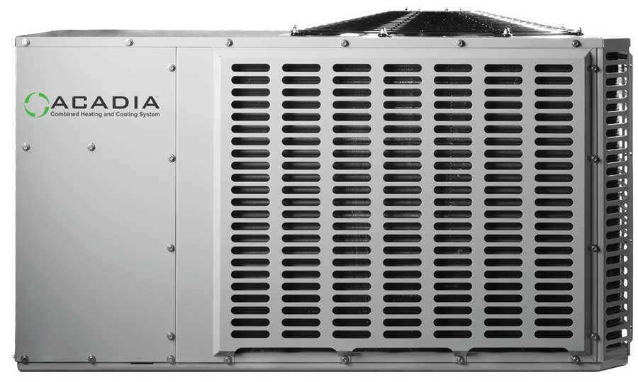

Renewable energy is big news these days. More and more people recognize that developing less-polluting, greener energy sources is the key to tackling the problems of air and water pollution, declining oil and gas supplies, and rising greenhouse gas emissions. Because of this momentum, there have been a steady stream of new technological developments. On a number of fronts, work is underway that ultimately promises cleaner, more abundant and more reliable sources of energy.
Some of the developments are filtering into the marketplace now, while others are years away from reaching their full potential. In the end, advances in energy technology will have widespread and positive effects on everyday life. Although no new technology will end our reliance on fossil fuels in the near future, collectively these developments represent a step forward. Consumers will benefit, and so will the environment. Here’s a big-picture look at five of the many developing technologies that have the potential to change how we use energy.
(You can share your thoughts on these and other emerging green technologies by posting a comment below. - MOTHER)
Renewable energy sources accounted for about 9 percent of total U.S. electricity consumption in 2008, according to the U.S. Energy Information Administration (EIA). However, only about .02 percent of electricity came from solar energy in 2008, and that includes both solar thermal and photovoltaic (PV) technologies. While PV installations are increasing rapidly, there’s a long way to go before solar makes a significant contribution to our total electricity supply. However, that could change quickly. For one thing, federal incentives for producing energy have long favored fossil fuels, but now additional federal money is being used to support renewable energy. At the same time, new PV research is decreasing the cost of the technology and increasing the efficiency.
Generating electricity from solar power still costs more than generating power from fossil fuels. However, according to Solarbuzz, a solar research and consulting company, the gap is narrowing between the cost of generating solar energy at home and the price consumers pay for utility-generated electricity. A recent report from Solarbuzz shows that the average price of producing electricity from a residential-scale PV system is about 35 cents per kilowatt-hour (kWh). That compares to an average price of 12 cents per kWh that consumers pay for electricity in the United States, according to the EIA. However, in a few U.S. locations, average electricity prices are already over 20 cents per kWh, and the research on ways to lower the cost of solar electricity is extremely promising. John Benner, manager of PV partnerships at the National Renewable Energy Laboratory, says he expects PV costs to run head-to-head with utility power over the next five years.
Currently, most commercially available PV cells use crystalline silicon as a semiconductor to generate electricity. Another PV technology is manufacturing thin-film cells by depositing amorphous silicon on a variety of substrates. Of the two, crystalline silicon is more efficient, converting more of the energy potential of sunlight into electricity. But although amorphous silicon has about half the efficiency crystalline silicon, it uses 100 times less silicon to generate the same amount of electricity. The high-grade silicon required for solar cells is expensive, so processes that use less of it have real benefits.
Finding materials that can generate electricity more efficiently or at a lower cost than silicon is another significant area of new research. Several alternatives are already available, including thin-films produced with cadmium telluride (CdTe), and copper indium gallium selenide (CIGS). While promising, these non-silicon materials may be difficult to scale up to meet global demands for electricity without quickly depleting natural resources, according to a study reported in Environmental Science & Technology. Alternatively, the report says, researchers have identified 12 materials that could “meet or exceed” global electrical consumption. Nine of them have the potential to be much cheaper than crystalline silicon. Among them are copper sulfide, copper oxide and iron pyrite, which is “several orders of magnitude better than any alternative” on the basis of cost and abundance.
Another promising technology is the dye solar cell, which mimics photosynthesis - the natural process that relies on the pigment chlorophyll. An Australian company, Dyesol, hopes to bring the dye solar cell to market within the next few years at a much lower cost than silicon PV. The process of artificial photosynthesis used in this technology relies on dyes derived from titanium oxide, which is both abundant and nontoxic. Elsewhere, researchers are tinkering with multilayered plastic solar cells, metals that absorb all light frequencies instead of just a few, and special anti-reflective coatings that allow solar cells to absorb nearly all of the sunlight that strikes them, no matter how the panel is oriented toward the sun.
In short, the research world is awash in stories of breakthroughs and near-breakthroughs that will bring the cost of solar electricity down and make solar panels more available. The question is, how many of these technologies will actually blossom into commercially viable products, and when?
The promise: Clean energy that doesn’t increase carbon emissions, an affordable alternative to utility power, more choices for consumers, and making electricity available to people who currently have no access at all.
The downside: Extended research is still needed, and some developing technologies may be false leads.
Time frame: Thin-film alternatives to silicon cells are already available, but other technologies may be five or more years away.
Electricity is moved from generating plant to end user over an enormous and complicated network called the grid. Although it is more than 99 percent reliable, according to the Department of Energy (DOE), power outages cost U.S. consumers $150 billion a year, and without intervention, they’re likely to become even more common. Despite increased demand, only 668 miles of new transmission lines have been built since 2000. If, however, the grid can be made only 5 percent more efficient, the energy savings would equal the elimination of fuel consumption and greenhouse gas emissions from 53 million cars.
That’s part of the promise in something called the “smart grid,” a less centralized, more responsive distribution system that encourages more consumer interaction and allows more small-scale power generation. The DOE says development of the new grid and its satellite technologies is as fundamental to the country as the development of the Internet and our system of interstate highways.
Smart meters, which monitor electricity consumption and transmit the information wirelessly to utilities, are one of several “enabling technologies” that will speed the smart grid along. The meters, which give consumers the ability to track electricity use online, are being rolled out by utilities all over the country, including Connecticut Light & Power, Pacific Gas & Electric in California, CenterPoint Energy in Houston and San Diego Gas & Electric, among others. In conjunction with an energy dashboard, consumers can track real-time pricing and take advantage of off-peak rates or allow air conditioning units to come on only when power costs are down. Already, customers in some areas can allow their utilities to power down air conditioning units remotely in the event of a power emergency, thus easing peak loads that drive up power costs.
The promise: More control by consumers on what they spend on electricity, greater overall efficiency, less greenhouse gas emissions, better reliability, better integration with small-scale renewable power sources, reduction in new power plant construction, and fewer rate increases.
The downside: Smart meters can be expensive, costing up to $500. Even when they’re installed by utilities, the price is ultimately passed on to consumers. Some consumers find benefits are vague.
Time frame: Smart meters and related technologies are already being rolled out, but full development of the smart grid is a decade away.
Despite a loyal following, General Motors’ first electric vehicle, the EV1, never reached mass production. Introduced in the mid-1990s on a lease-only basis, the vehicles were later pulled off the road by GM and crushed. Times have certainly changed.
GM and almost all other automakers are now betting that the future of green transportation will include electric cars, whether all-electric, plug-in gasoline-electric hybrids, or both. GM hopes to get its Chevrolet Volt plug-in hybrid electric vehicle (PHEV) to dealers in a few markets by 2010. Other companies developing PHEVs include Ford, Toyota, Fisker Automotive, Mercedes and Volvo.
Nissan is getting into the electric vehicle game with the all-electric Leaf, to be introduced in some states in 2010 and mass produced by 2012. Nissan says the Leaf will have a 100-mile range. Tesla Motors, which already sells an all-electric (and expensive) plug-in roadster, is working on a lower-priced, all-electric sedan, which could be available in late 2011.
Plug-in hybrids differ from the gas-electric hybrids that are already widely available in that the owner can recharge it at home, and PHEVs are capable of running longer on electricity alone. All-electric vehicles don’t burn gas at all, and can be 100 percent emissions-free if recharged with renewable energy.
The Volt is a plug-in hybrid, and for distances of 40 miles or less, it will run on its lithium-ion batteries. After that, a gasoline-powered engine will run a generator to recharge the batteries and give the car a range of about 300 miles. At night, the driver plugs the car into an ordinary 110-volt outlet to recharge it. Overall, the cost to recharge should be the equivalent of gasoline at less than $1 per gallon. Fisker says its plug-in Karma, the first of which will be delivered in 2010, will have a 50-mile battery-only range. However, Tesla says its all-electric Model S sedan will have a range of 300 miles.
Using optimistic scenarios based on standards written by the U.S. Environmental Protection Agency (EPA), automakers say this new generation of plug-in hybrids and electric vehicles will get phenomenally high fuel economy ratings, the equivalent of 230 mpg for the plug-in Volt, or 367 mpg for the all-electric Leaf. However, it should be noted that current fuel economy tests are still designed for gas vehicles. The EPA is presently working on new, and more meaningful, fuel economy measurements for cars that use gas and electricity as fuel.
Plug-ins and electric-cars have some environmental advantages, but they don’t get a completely free pass. When the cars are running on their batteries alone, tailpipe emissions are zero, but the electricity used to recharge the cars is likely from fossil fuels. That said, with a growing amount of renewable energy coming online, more and more electric vehicles will be powered with renewables.
The promise: Reduction or outright elimination of tailpipe emissions, overnight recharging can take advantage of lower off-peak electric rates, reduced reliance on foreign oil, and domestically produced electricity can come from a variety of sources, including solar, wind and hydro.
The downside: High upfront cost (the Volt may cost $40,000 or more; the Tesla Model S is expected to cost more than $55,000), low battery-only range for long-distance travelers, and a network of charging systems is yet to be built.
Time frame: Test cars are out now, with more on the way.
If, as the saying goes, a boat is a hole in the water into which you pour money, outdated windows are a hole in the side of the house through which you lose heat. Even double-glazed, low-e windows are far less effective insulators than a typical wall assembly. For example, a window with an R-value of less than 3 can earn an Energy Star rating, while an insulated 2-by-6 wall could easily have an R-value approaching 20.
A new generation of super windows incorporates a triple layer of glass or multiple layers of heat-reflecting films that create more insulating cavities and boost performance. Internal spacers slow down the transmission of heat at the edge of the glass, and insulated fiberglass frames reduce stress between the glass and frame to cut air leaks.
Southwall Technologies makes a type of heat-reflecting film called Heat Mirror. Superglass Quad windows, which are made with this film, claim an R-value of R-20. They contain three internally mounted films and four internal air spaces, as shown in the Image Gallery. (The insulating value of windows is typically expressed as a “U-value,” the inverse of an R-value, so the U-value of this window is 0.05, or 1 divided by 20.) Thermotech, a Canadian company, also makes highly regarded triple-pane windows.
Windows such as these are a major step forward for energy conservation, but even more interesting are electrochromic, or dimmable, windows that can go from clear to dark in a matter of seconds. One type is called a “suspended particle device.” Millions of particles suspended between two sheets of glass either admit or block light depending on voltage applied to a conductive coating on the inside of the glass.
A company called Sage Electrochromics uses another approach. Glass is coated with several layers of a ceramic material, the opacity of which changes from clear to tinted, depending on whether current is applied. Sage CEO John Van Dine says variable-tint versions will be available in 2010. The glass has a U-value of 0.28 (R-3.5) and a Solar Heat Gain Coefficient ranging from 0.09 to 0.48, depending on the level of tint. Initial costs are high, but the windows eliminate the need for blinds and shades.
The promise: Greater control over light transmittance and heat gain, lower cooling costs, eliminates need for window blinds and outside overhangs, reduces glare without losing the view, and reduces the energy needed to heat and cool buildings, which is a major source of greenhouse gas emissions.
The downside: High initial cost.
Time frame: Here now.
Energy-efficient air-source heat pumps heat and cool homes, and because they run on electricity, they don’t burn fossil fuel - at least not directly. Perfect, right? Not quite. Conventional air-source heat pumps don’t work well when temperatures fall into the 30s. Electric resistance heaters or a gas-fired furnace have to kick in, negating the energy efficiencies that make heat pumps so attractive.
In areas where temperatures dip well below freezing, homeowners who want a heat pump have to pony up the extra money for a ground-source version, which is also called geothermal heating. They’re a marvel of efficiency, returning three or four units of heat energy for every unit of electrical energy required to run them. But they’re costly to install because the loops of heat-exchange tubing that go in the ground require extensive excavation or extra well borings.
Cold-weather air-source heat pumps, still relatively new, cost about one-third as much as ground-source models and are still 200 percent efficient at 15 degrees below zero, according to Hallowell International, a Maine-based manufacturer. The device uses 410A refrigerant, which doesn’t degrade the ozone layer.
Hallowell’s Acadia heat pump incorporates a second compressor that kicks in when outdoor air temperatures fall below 30 degrees, making the refrigerant even colder and able to absorb heat in colder air. Supplemental heat may still kick in, but at a lower point, and the heat pump has to go through a defrost cycle for outdoor coils far less frequently than a conventional air-source heat pump does, says the company’s CEO, Duane Hallowell.
Hallowell estimates that in a cold part of the country, operating costs for the Acadia would be almost 40 percent lower than a conventional air-source heat pump and less than a third of the cost of using electric resistance heat.
The promise: The benefits of high-efficiency heat pump technology at a lower cost than ground-source units but without excavation, heat and air conditioning from same unit, high efficiency even in below-zero conditions, allows many more people to heat and cool their homes more efficiently, and electricity can potentially come from renewable sources.
The downside: Not compatible with hydronic heating systems, initial costs may be twice those for standard heat pumps.
Time frame: Here now.
|
AP PHOTO/TED S. WARREN Photovoltaic panels have been around for decades, but a range of new design improvements promises far greater efficiency and much lower costs. |
DYESOL Dye-based solar cells produce energy by mimicking photosynthesis. |
ISTOCKPHOTO/ANN TAYLOR HUGHES Making the electric grid “smarter” would help save energy, prevent power outages and bring more renewable energy online. |
|
DOMINION POWER Smart meters give consumers real-time data about their electricity consumption. |
NISSAN The Nissan Leaf is one of several all-electric vehicles being developed. |
TOYOTA A prototype plug-in Toyota Prius recharges. |
|
SOUTHWALL TECHNOLOGIES A new generation of windows can greatly reduce heat loss. |
SAGE ELECTROCHROMICS “It’s hot in here, could you dim the windows, please?” New window designs feature more user control. |
 HALLOWELL No, this is not an air conditioner, it’s an air-source heat pump - a very efficient way to heat and cool your home. |